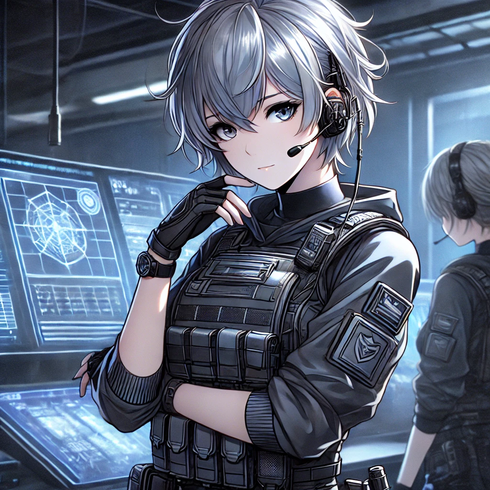

Relations
Accueil
Identité
Histoire
Compétences
Inventaire

Alliés
Nyra Valen :
Stratège (28 ans, cheveux courts argentés, tempérament réfléchi).
Ennemis
Le Flambeau du Jugement :
Leader d'une faction rivale.
La Danseuse des Cendres :
Ancienne alliée devenue adversaire.